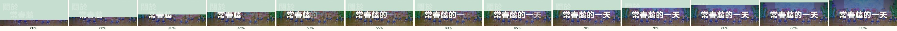
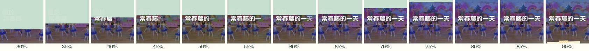
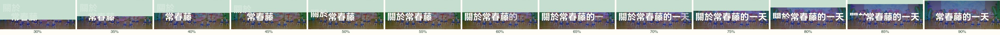
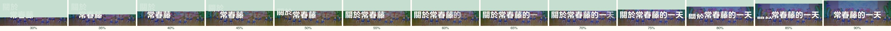
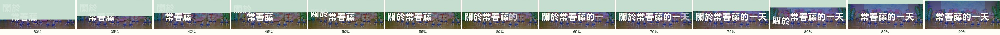
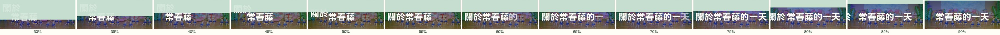
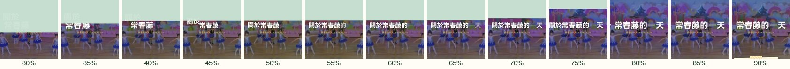
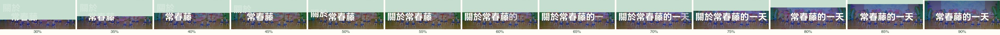
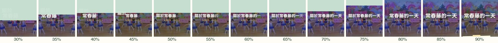

「關於」掉進「常春藤的一天」，再直接消失
2026-09-24 定案：沉下去，已是首頁預設。?drop= 參數已移除，下面是當時的比稿紀錄。
擦除線過完「常春藤」停住時，「關於」從上一行往下掉，穿過擦除線：上半還是淡綠浮水印，下半已經是白字，跟「常春藤」接力的方式一樣。「關於」落在「常」的前面，整行成為「關於常春藤的一天」，接著「的一天」逐字接上。之後繼續捲動，「關於」會消失（不是淡出），大標再回到置中。五個方向只有消失的方式不同。影片都用同一個捲動速度（320 px/s）錄製；膠卷條是簾幕捲動 30%→90% 之間每 5% 截一格。
先看這個：現況 vs 沉下去
現況
基準/現在線上的版本：擦除線過完「常春藤」後停一拍，「的一天」逐字接上。「關於」留在原位，跟著擦除線被擦掉。


擦掉
?drop=wipe「關於」由下往上被擦掉，跟區塊之間的簾幕是同一種切法。擦完之後，大標才滑回置中。

沉下去
推薦?drop=sink「關於」往下沉進字行，字行底緣以下看不到，像是掉進來之後又沉進去。沉完之後大標回正。「掉」的動作前後一貫，也最安靜。

掉出去
?drop=out「關於」繼續往下掉，微微轉 12°，掉出畫面。掉到一半時，大標就開始回正。
動作最大，也最俏皮。它會掉過下方的拍立得區，畫面比較熱鬧。

擠出去
?drop=push「關於」往左滑出畫面，大標同時往左回到置中，看起來像是被整句擠出去。
手機上是往左邊界滑出，動作距離短，看起來比較像被推走。


瞬間消失
?drop=cut擦除線走到某個點，「關於」直接不見，沒有任何過場；接著大標滑回置中。
最符合字面上的「直接消失」。但少了過場，捲得快的人可能會以為是畫面閃了一下。


- 讓位與縮放：桌機 1440 寬剛好放得下 8 個字，所以「關於」掉下來時，大標只往右讓出一個字的位置。手機放不下，整行會縮到約 75%，「關於」消失後再放回原大小。
- 捲動長度：停拍從 22% 加長到 32% 的捲動，前 45% 給「關於」掉下來，後段給「的一天」逐字。簾幕相應拉長：桌機 1.1→1.25 屏，手機 0.7→0.8 屏。停拍結束後，擦除線再往上走一段，這段捲動讓「關於」消失。
- 無障礙：讀屏讀到的大標仍然是「常春藤的一天」；掉下來的「關於」是
aria-hidden的裝飾字。開啟「減少動態」時沒有簾幕，也就不會出現落下的效果。 - 09-18 曾否決過「幽靈關於」，也就是在日常區放一個淡淡的「關於」。這次的效果是你指定的，而且「關於」會變成白字、最後會消失，跟那個方向不一樣。
- 錄影與截圖腳本放在
scripts/。定案後會把?drop=參數和沒選上的方式一起清掉。